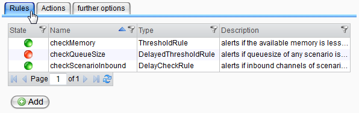
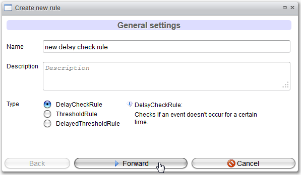
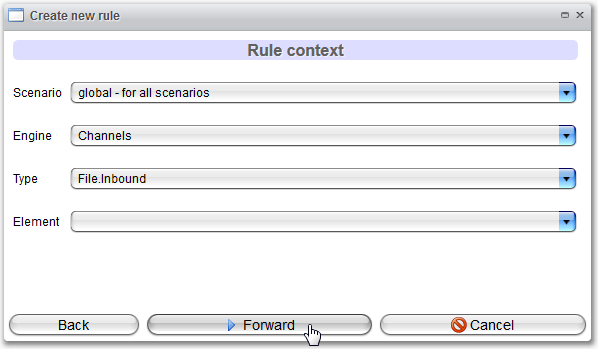
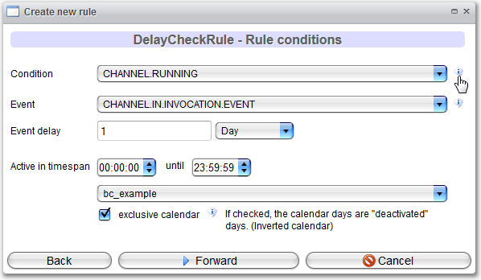
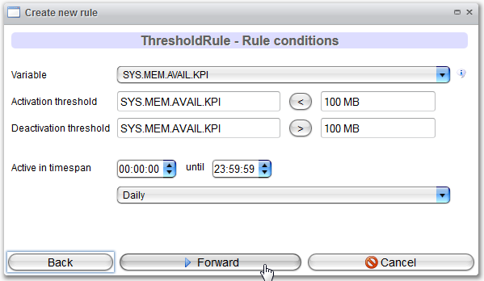
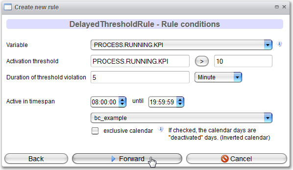
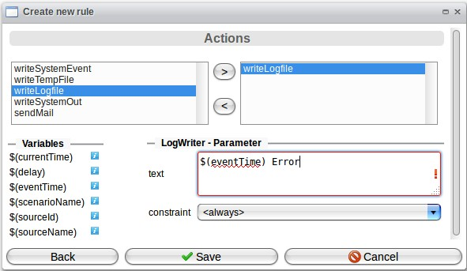

Alert Rules

Topic content
Overview

The standard view shows a table of all saved rule definitions together with their name, type, description and the corresponding state (active/inactive). Use the context menu of the table for activation, deactivation, deletion or viewing/editing with a detail dialog.
The "Add"-button below the table starts the wizard for creating a new rule definition.
Wizard for Rule Definition
With the alert wizard, the creation of rule definitions is split into four steps. Navigating forward saves the selections or indicates missing input. Navigating backwards discards the data in the current view.
Step 1

In the first step, you have to define a name, optionally a description and the rule type. For an easier handling, for every rule type an explanation is displayed if it is selected.
Step 2

The second step restricts the range of validity of the rule. Selections of scenario and engine have to be made in every case. Restricting the channel type or a concrete channel of a process model are optional.
|
The selection made here affect the available variables in the next step. For example, if a restriction is made to all existing File-Inbound-Channels (like in the figure above), only variables available for these are shown for selection. |
Step 3
The selection of the criteria, when a rule triggers its actions, is done in the type specific formulas in the third step of the wizard.
Generally, you can hover over the speech bubbles next to the choice fields of variables to get a short information about the selected variable.
Furthermore, for each type the time span for the rule checking can be configured. Here, the combination of time selection and existing business calendars is possible. A business calendar standardly indicates the active appointments, by checking the "exclusive calendar" box, the calendar can be inverted.

For the DelayCheckRule, two variables have to be chosen. The first one defines the state of the channel or process model, the second the observable event.

The selection of the threshold values for the ThresholdRules are generally made through numerical values! Like in the figure above shown, for memory-related variables (like for example the available memory space) it is not only possible to use Bytes but also MB for Megabyte and GB for Gigabyte.
Clicking on a comparative operator changes its direction. The ThresholdRule needs a second threshold for the deactivation of the rule. This can differ from the activation threshold.

The DelayedThresholdRule needs a threshold as well as the time span in which the threshold should be broken.
Step 4
In the fourth step you can configure the actions that are performed if the rule is triggered. For more information about the actions, look here: Alert Actions
In the dialog, put the actions that should be called on the right. In the lower part, on left side you can see the variables you can use on the right side. Depending on the action, you can add some configuration here. In the figure below, a log file is written and the variable "eventTime" is used.
